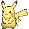

-
Bulbasaur #001

- Grama
- Veneno
Há uma semente de planta em suas costas desde o dia que este pokémon nasce. A semente cresce lentamente.
-
Ivysaur #002

- Grama
- Veneno
Quando o bulbo em suas costa cresce , parece perder a capacidade de ficar de pé em suas patas traseiras.
-
Venusaur #003

- Grama
- Veneno
Sua planta florece quando está absorvendo energia solar. Ele permanece em movimento para buscar a luz solar.
-
Charmander #004

- Fogo
Tem preferência por coisas quentes. Quando chove, diz-se que o vapor jorrada ponta de sua cauda.
-
Charmeleon #005

- Fogo
Impiedosamente destrói seus inimigos usando suas garras afiadas. Se ele encontrar um adversário forte, verifica-se agressivo.
-
Charizard #006

- Fogo
Tem um pescoço longo, pequenos olhos azuis, narinas ligeiramente levantadas e duas estruturas semelhantes a chifres saindo da parte de trás de sua cabeça retangular. Existem duas presas visíveis na mandíbula superior quando a boca está fechada.
-
Squirtle #007

- Agua
Pokémon valente e corajoso. Com o visual que lembra o casco de uma tartaruga, a cauda e cor azul também aparecem com destaque. Além disso, ele é muito lembrado pelas evoluções.
-
Wartortle #008

- Agua
Move suas orelhas para nadar mais rápido e, é um Pokémon muito popular como um animal de estimação. E na sua última evolução Blastoise
-
Blastoise #009

- Agua
Tem um corpo enorme para proteger seus aliados e poder o bastante para detonar seus oponentes com ataques aquáticos. Seu Unite Move é Hydro Typhoon. Blastoise começa a girar, lançando poderosos jatos d'água que mandam os Pokémon oponentes ao redor para longe.
-
Caterpie #010

- Inseto
É baseado em uma minhoca. Sua pele é verde, tem olhos amarelos com púpilas pretas, tem uma antena vermelha e tem uma "boca" verde, tem quatro pequenas patas amarelas e em seu corpo, existem vários círculos amarelos e na ponta de sua calda tem uma espécie de chocalho.
-
Pikachu #011
- Elétrico
É um Pokémon especializado em atacar oponentes de longe com eletricidade. Às vezes, seus ataques até deixam os Pokémon oponentes paralisados!